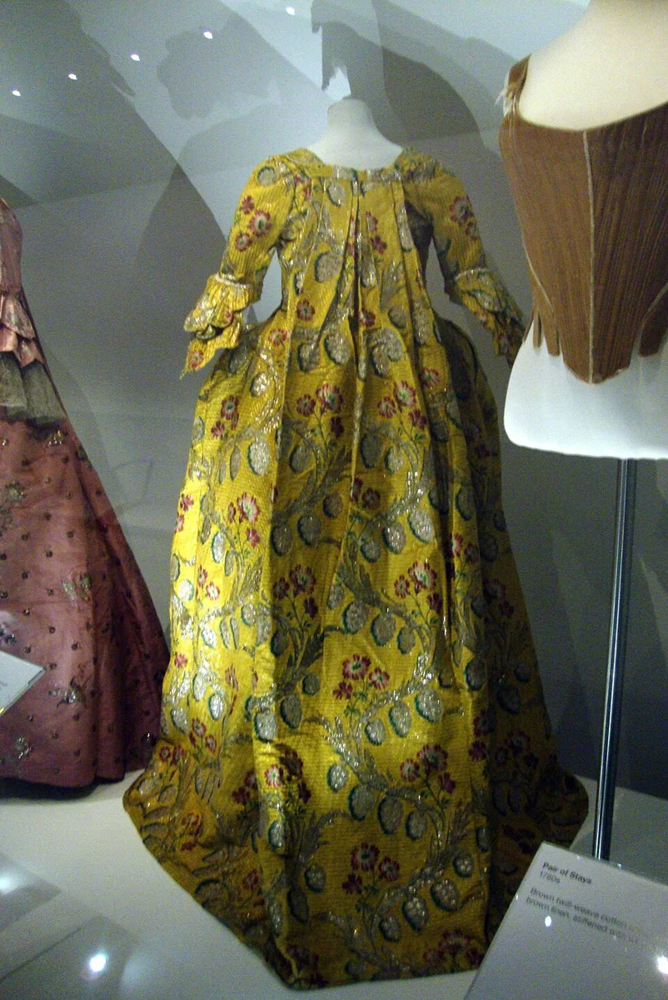

Patterns from surviving garments
Fold a model strip into a box pleat and compare its depth with the back of an actual garment.
Inspect source image

Fold a model strip into a box pleat and compare its depth with the back of an actual garment.
